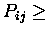

STAMP alignment output consists first of a list of domain descriptions and
relevant transformations. After this an alignment may or may not
be output.
Multiple alignments are displayed as follows (see
STAMPDIR/examples/globin_stamp_trans.6):
/data/newpdb/pdb/pdb1lh1.ent 1lh1 { ALL
1.00000 0.00000 0.00000 0.00000
0.00000 1.00000 0.00000 0.00000
0.00000 0.00000 1.00000 0.00000 }
/data/newpdb/pdb/pdb2hhb.ent 2hhba { CHAIN A
0.71639 0.34414 0.60691 19.45435
<Etc.>
-0.31092 -0.94263 0.12159 68.85890 }
Alignment Score Sc = 7.665619
Alignment length Lp = 156
RMS deviation after fitting on 116 atoms = 2.434597
Secondary structures are from DSSP
>1lh1 (cluster A) sequence
>2hhba (cluster B) sequence
>2hhbb (cluster B) sequence
>4mbn (cluster B) sequence
>1ecd (cluster B) sequence
>2lhb (cluster B) sequence
>space
>1lh1_dssp (cluster A) secondary structure from DSSP
>2hhba_dssp (cluster B) secondary structure from DSSP
>2hhbb_dssp (cluster B) secondary structure from DSSP
>4mbn_dssp (cluster B) secondary structure from DSSP
>1ecd_dssp (cluster B) secondary structure from DSSP
>2lhb_dssp (cluster B) secondary structure from DSSP
#T -- '1' = used in the final fit
#P -- averaged Pij
#A -- distance between averaged CA atoms in angtroms
#G -- $P_{ij}{\prime}$ value
ABBBBB ABBBBB use Pij Distance $P_{ij}{\prime}$
* iteration 1
P
I
V
D
T
G
S
V
G V A - - -
AVHV P ---- -
LLLLLL ------ 1 0.50337 1.90006 6.98400
TSTSSS ------ 1 0.49631 2.00483 6.88900
EPPEAA HHHHHH 1 0.55533 1.89926 7.68300
SAEGDA HHHHHH 1 0.60834 1.80863 8.39600
QDEEQE HHHHHH 1 0.70134 1.64212 9.64700
AKKWIK HHHHHH 1 0.75434 1.52204 10.36000
ATSQST HHHHHH 1 0.75137 1.51092 10.32000
LNALTK HHHHHH 1 0.80831 1.36142 11.08600
VVVVVI HHHHHH 1 0.85737 1.21626 11.74600
KKTLQR HHHHHH 1 0.83537 1.27448 11.45000
<Etc.>
ITNKGI HHHHHH 1 0.85737 1.04393 11.74600
VVADML HHHHHH 1 0.84332 1.11847 11.55700
ILLIIL HHHHHH 1 0.81232 1.20349 11.14000
KTAAFR HTHHHH 1 0.80035 1.22529 10.97900
KSHASS HTTHHT 1 0.73137 1.29476 10.05100
EKKKKA HTTHHT 1 0.60031 1.66495 8.28800
M Y H H
D K H H
D E H H
A L H H
*
The `>' and `#' characters tell the routines that read alignments
what is to be contained in each field. A `>' character denotes a
character string which is to be displayed vertically, and a `#'
character denotes a string of numbers to be displayed separated by
spaces. Thus in the above example we have 13 character strings
vertically (6 amino acid sequences, 1 string of spaces and 6 DSSP
assignments) and 6 numeric fields (corresponding to various details
from STAMP) specified. The actual alignment will be contained
within `*' characters as shown. Accordingly, no occurance of `>',
`#' and `*' characters should occur outside of these contexts.
The As and Bs just above the `*' symble
refer to the members of the two cluster (branches)
which are brought together during this alignment.
Briefly, the numeric fields are:
#T 1 or 0, 1 shows those residues used to
determine the fit of the two sets of structures.
#P averaged Rossmann and Argos Pij value
#A distance between averaged
 atoms
atoms
#G corrected Pij value (
 )
)
Note that the program POSTSTAMP adds two new fields:
#B 1 if all pairiwse

the user defined minimum, 0 otherwise
#R the total number of pairwise comparisons having
the cutoff out of